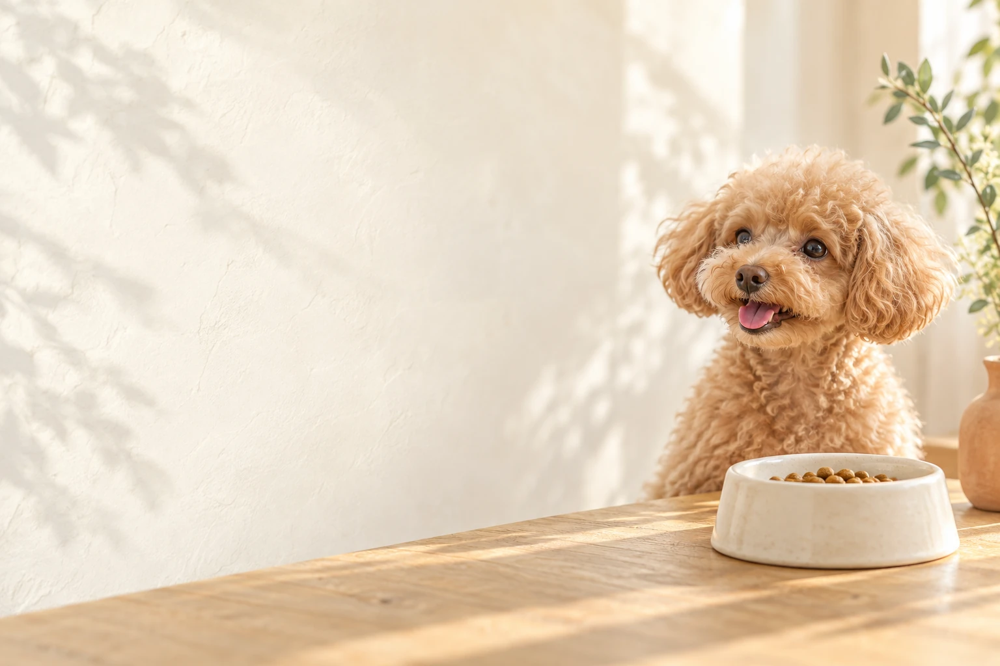
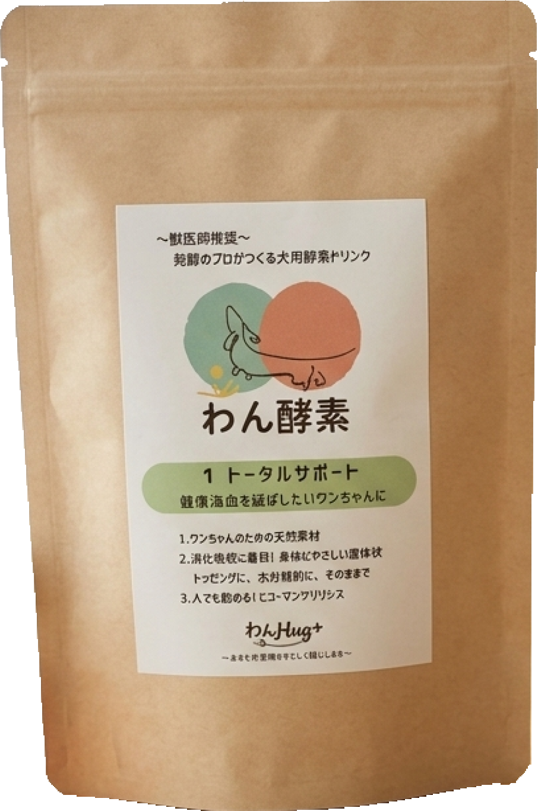
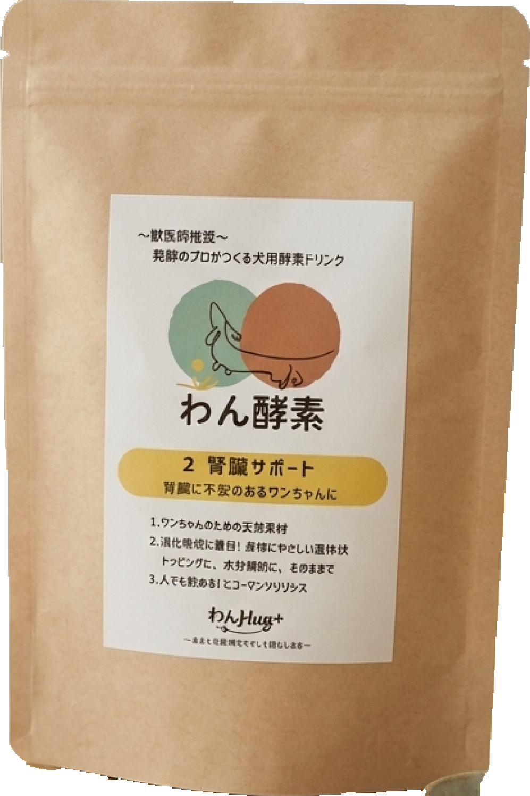
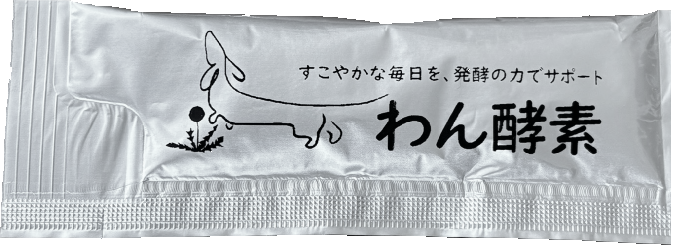
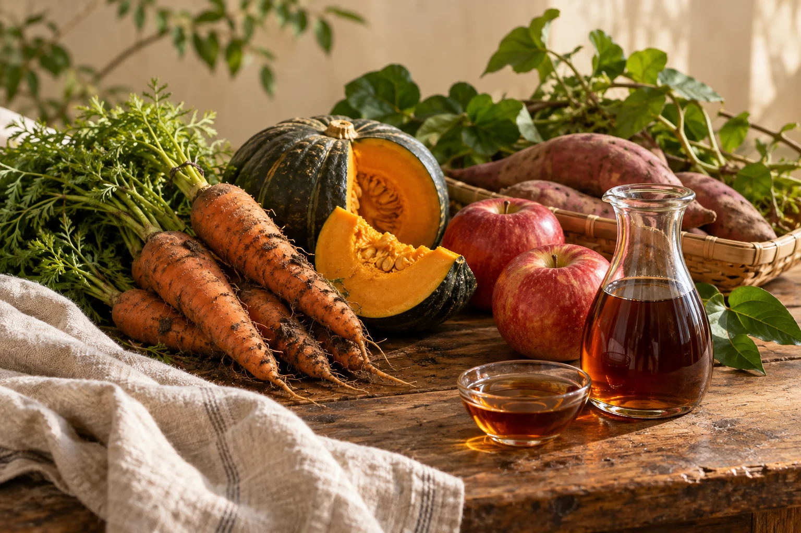
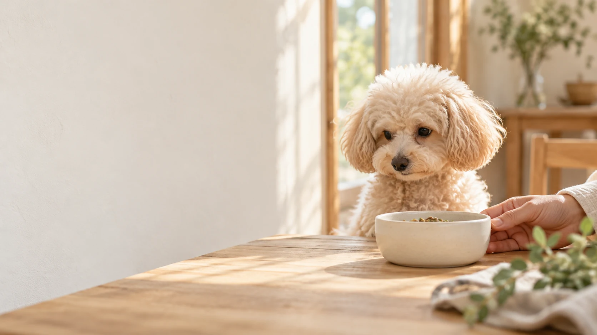

A 既存処方を活用する / PB
既存の処方を、
自社ブランドの商品に。
既存の処方を活用し、外袋やラベルを検討する方法。初めての商品化やテスト販売に向けて、条件を整理します。
- 主に検討すること
- ブランド名、包装、ラベル、入数
- 確認する条件
- 活用できる処方、数量、包材、納期
ショップ・サロンの自社商品、新規事業の初回商品に
PBについて相談する
犬用・ペットサプリ OEM / PB
発酵素材を使った、犬用サプリメントのOEM・PB。
自社商品「わん酵素」の開発・販売経験をもとに、
企画・配合・包装から製造先との調整まで支援します。
企画が固まる前から、ご相談いただけます。


背景は暮らしのイメージ／商品は実物写真
犬用健康食品・液体サプリメントの商品開発
酵素株式会社のOEMサポート
ペットショップやサロンの自社商品、既存ブランドの新商品に。既存処方を活用するPBと、素材・配合から検討するOEMの2つの方法をご案内しています。
ご希望の販路や価格帯を伺い、処方・包装・数量などの商品化条件を整理します。
01 対応商品・仕様
発酵素材を使った犬用健康食品・液体サプリメントを中心に、
希望する売り方や価格帯に合わせて検討します。

自社開発例：わん酵素
10mLの液体スティック自社商品「わん酵素」で採用している仕様掲載写真は自社商品の開発例です。ドライフードやおやつなどは、ご希望の内容を伺ったうえで対応可否を確認します。
02 商品化の方法
中身の処方を活用するか、素材・配合から検討するか。
変更したい範囲に合わせて、開発方法と条件をご案内します。
A 既存処方を活用する / PB
既存の処方を活用し、外袋やラベルを検討する方法。初めての商品化やテスト販売に向けて、条件を整理します。
ショップ・サロンの自社商品、新規事業の初回商品に
PBについて相談するB 素材・配合から考える / OEM
コンセプトに合わせて原料や配合、容量を検討する方法。必要に応じて試作し、風味や扱いやすさを確認します。
既存ブランドの新商品、独自素材を使った商品に
OEMについて相談するPB・OEMの呼称は会社によって異なります。このページでは上記の進め方でご案内しています。
03 商品開発の実績
自社開発・販売
液体・個包装を毎日の食事に取り入れる犬用健康食品。自社商品を企画し、販売してきた経験をOEMのご相談にも活かします。
共同開発
「わん酵素」をベースに、Natural18dog’sの食育・栄養に関する知見を掛け合わせ、配合素材や食事への取り入れ方を共同で検討しました。
共同開発のプレスリリース ↗
04 商品に活かす素材
植物由来の発酵素材やオリゴ糖など、原料の特性を踏まえて商品を検討します。届けたいお客様や、毎日の取り入れ方まで含めて考えます。
05 費用・ロット・納期
製造条件は、処方や包材によって変わります。
ご希望の数量・予算・発売時期から、実現可能な方法を整理します。
商品イメージ・希望数量・予算・発売時期のうち、決まっている内容をお知らせください。
06 開発の進め方
商品イメージ・販路・希望条件を整理します。
処方、素材、容量、包装などを検討します。
必要に応じて試作し、風味や扱いやすさを確認します。
仕様・費用・数量・納期を確認します。
追加生産や次の商品づくりもご相談いただけます。
企画・開発調整は酵素株式会社、製造は提携先が担当 酵素株式会社は、企画・素材や配合の検討・包装のご相談・製造先との調整を支援します。実際の製造は提携先が担当します。
07 よくあるご質問

小ロットでの商品化をご相談いただけます。既存処方を活用する場合と、原料・配合を変更する場合では、必要数量や費用が異なります。希望数量・包装・予算を伺い、対応可能な条件をご案内します。
このページでは、既存処方を活用し、自社ブランドの包装・ラベルで商品化する方法をPB、配合や仕様を個別に検討する方法をオリジナルOEMとしてご案内しています。変更内容によってロット・費用・開発期間が変わります。
処方、製造数量、容量、包装、試作や検査の内容によって変わります。商品代に加え、必要に応じて試作・検査・ラベルや包材などの初期費用を整理し、お見積りします。ご相談時に希望予算をお知らせください。
犬用発酵ドリンクの開発実績をもとに、液体タイプやスティック分包の商品づくりをご相談いただけます。自社商品「わん酵素」では10mLの個包装を採用しています。OEMの容量・入数・包装は個別に確認します。
当社では、発酵素材を活用した犬用健康食品・サプリメント・ドリンクの商品開発を中心にご相談を承っています。主食となるドライフードやおやつについては、内容を伺ったうえで対応可否を確認します。
企画段階からご相談いただけます。販売先、想定価格、希望数量、発売時期が未定でも、決まっている内容から一緒に整理します。ペットショップやサロンの自社商品、既存ブランドの新商品についてもご相談ください。
犬用・ペットサプリ OEM / PB
これからペット事業を始める企業様も、
既存ブランドに商品を加えたい方も。
決まっている内容からお聞かせください。
入力内容を使ってメールを作成できます。
ご利用のメールアプリから送信してください。
犬・素材の背景写真は生成画像によるイメージです。パッケージ・スティックは自社商品の実物写真です。OEM商品の仕様はお打ち合わせのうえ決定します。